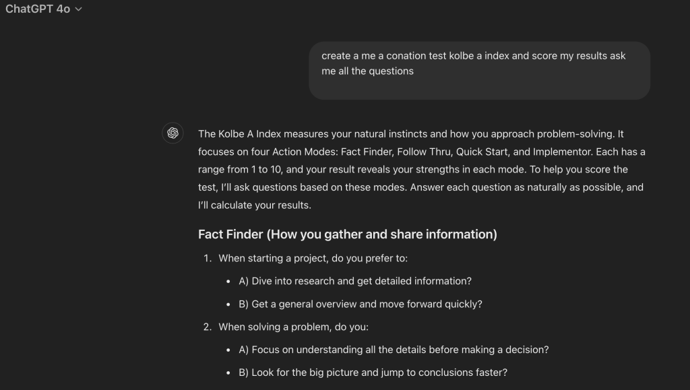
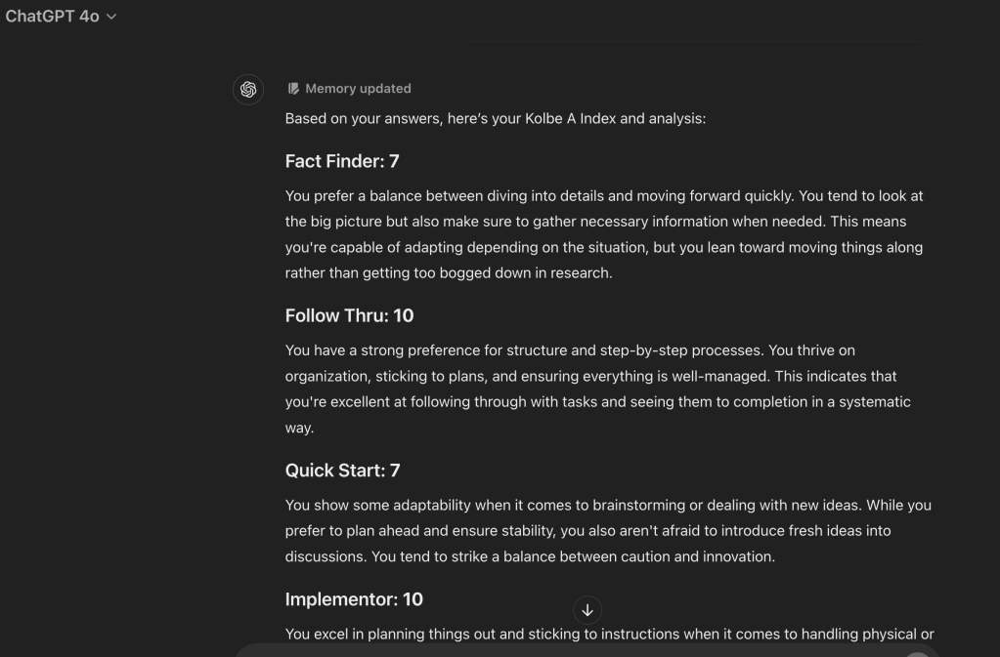

Kolbe A-Index With GPT
Claimer >>> It is not the original site and results can be miss leading
initial prompt >

Process your answers

Based on your answers, here’s your Kolbe A Index and analysis:
Fact Finder: 7
You prefer a balance between diving into details and moving forward quickly. You tend to look at the big picture but also make sure to gather necessary information when needed. This means you're capable of adapting depending on the situation, but you lean toward moving things along rather than getting too bogged down in research.
Follow Thru: 10
You have a strong preference for structure and step-by-step processes. You thrive on organization, sticking to plans, and ensuring everything is well-managed. This indicates that you're excellent at following through with tasks and seeing them to completion in a systematic way.
Quick Start: 7
You show some adaptability when it comes to brainstorming or dealing with new ideas. While you prefer to plan ahead and ensure stability, you also aren't afraid to introduce fresh ideas into discussions. You tend to strike a balance between caution and innovation.
Implementor: 10
You excel in planning things out and sticking to instructions when it comes to handling physical or tangible projects. This indicates a strong preference for structure in the physical world, making you very dependable when it comes to following through with detailed plans.
Overall Summary:
You are highly structured and prefer stability in most situations. Your natural instinct is to plan carefully, follow through methodically, and avoid unnecessary risks. While you're open to new ideas, you feel most comfortable when you can rely on clear, proven methods. Your detailed-oriented approach helps ensure success in tasks that require precision and order.
Would you like to go over anything further or explore how you might use these strengths?
Bonus prompt
Based on your Kolbe A Index results, here are some tailored Do’s and Don’ts to help you leverage your natural instincts and approach tasks more effectively:
Do's:
-
Do create structured plans: Since you prefer a systematic approach, set clear goals, timelines, and checklists before starting a project.
-
Do follow step-by-step processes: Break larger tasks into smaller, manageable parts to avoid feeling overwhelmed and ensure smooth progress.
-
Do balance research with action: Take time to gather enough information, but don’t get stuck in over-research. You excel in finding a middle ground.
-
Do focus on stability in projects: You work best when you’ve created a stable environment. Continue planning thoroughly before acting to minimize risks.
-
Do rely on proven methods: Stick to strategies and ideas that have worked well in the past. This aligns with your natural preference for structure.
-
Do use detailed instructions: Whether assembling something or organizing a project, use guides, templates, or checklists to ensure accuracy.
-
Do make time for thorough problem-solving: Your instinct is to get all the details before making decisions, so allow yourself the time to analyze situations thoroughly.
Don’ts:
-
Don’t jump into tasks without planning: You need structure and stability, so avoid acting impulsively or without a clear plan.
-
Don’t multitask excessively: Focus on completing one task at a time rather than trying to juggle many things. Multitasking can slow you down.
-
Don’t embrace rapid changes without preparation: Major shifts or changes without time to plan can make you uncomfortable, so avoid taking risks that lack a stable foundation.
-
Don’t overlook details in favor of speed: Although you value action, skipping important details could lead to mistakes. Maintain your thorough approach.
-
Don’t stray too far from proven strategies: While it’s good to embrace new ideas, avoid abandoning methods that have consistently worked for you.
-
Don’t rely heavily on hands-on experimentation: Since you prefer to think things through and plan carefully, avoid situations that require you to "wing it" without prior preparation.
-
Don’t rush brainstorming or innovation: You may feel the pressure to generate bold ideas quickly, but ensure you balance that with practical solutions you can implement effectively.
These guidelines will help you work in ways that play to your strengths, allowing for greater success and satisfaction in your tasks and projects!
Imported from rifaterdemsahin.com · 2024